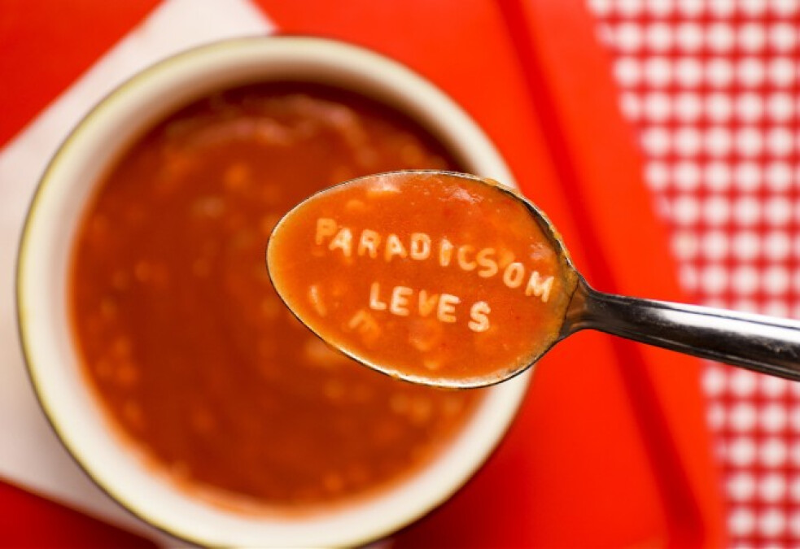

Paradicsomleves

Hozzávalók
- 7 dl paradicsomlé
- 3 evőkanál finomliszt
- 3 ek napraforgó olaj
- 1 kis fej vöröshagyma
- 3 ek cukor
- só ízlés szerint
- bors ízlés szerint
- 20 dkg tészta (ízlés szerint)
Elkészítés
- Az olajból és a lisztből rántást készítünk.
- AFelöntjük a hideg paradicsomlével, és elkeverjük.
- ABeletesszük a hagymát, ízlés szerint adunk hozzá cukrot, sót, borsot.
- AFelforraljuk, forralás után kb. 10 percig főzzük.
- AA betűtésztát sós vízben kifőzzük, csak tálaláskor tegyük a levesbe, mert megszívja magát.
- AHa később felmelegítjük, egy kis vizet tegyünk bele, mert besűrűsödik.